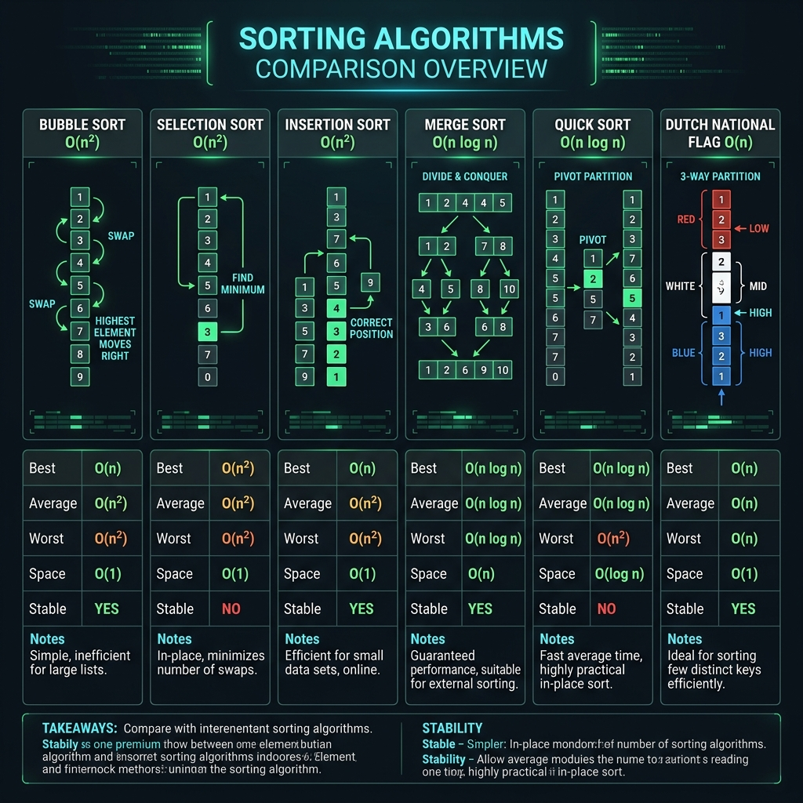
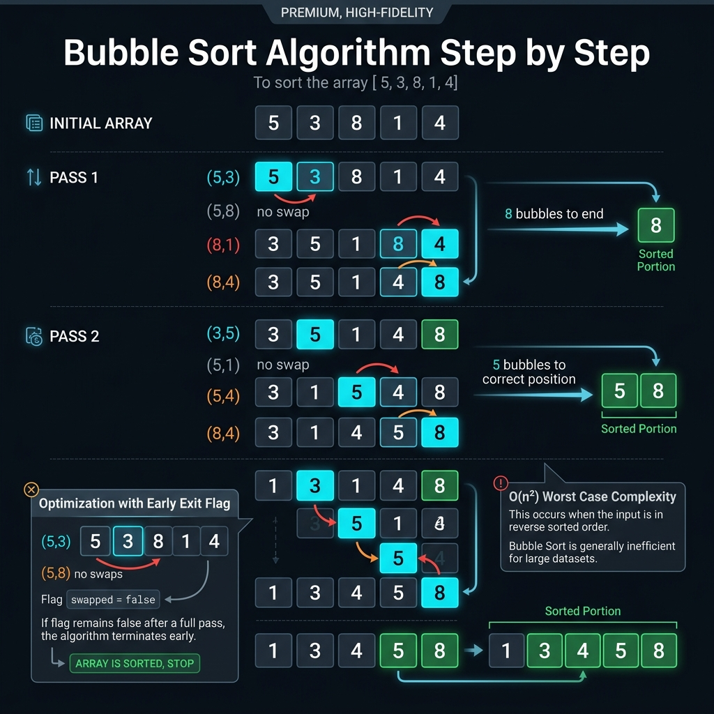
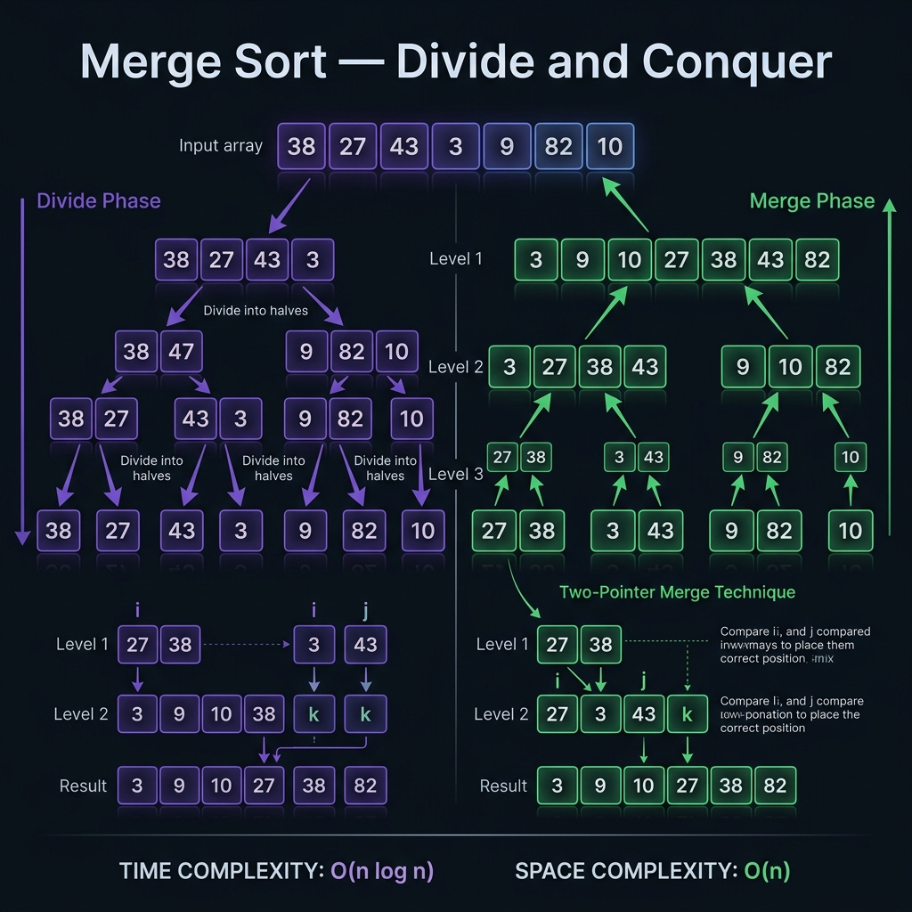
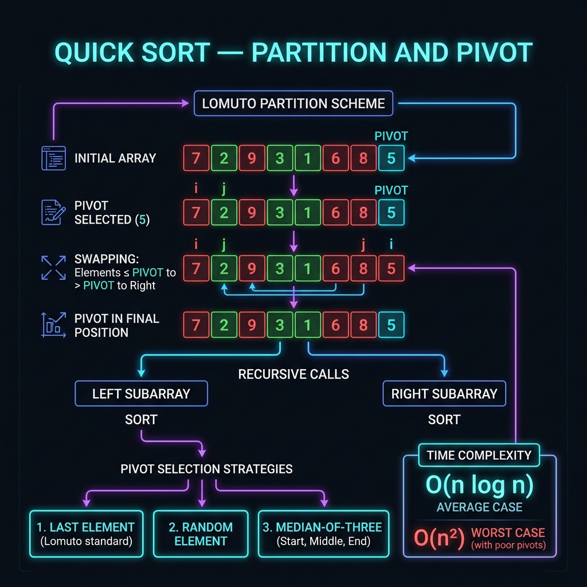
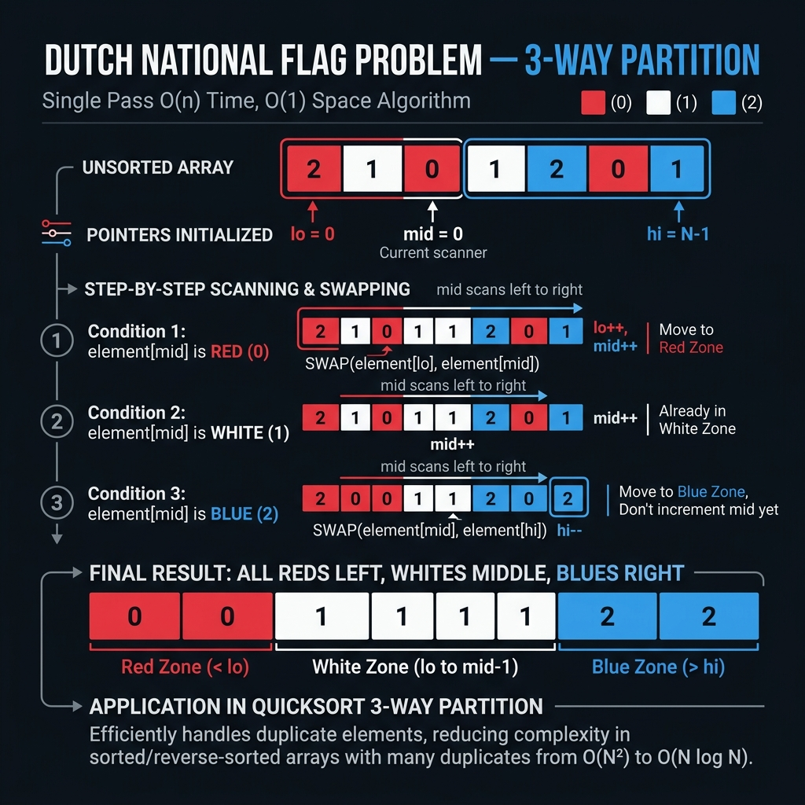

Go Sorting Algorithms
Tài liệu kỹ thuật chuyên sâu về 6 thuật toán sắp xếp cổ điển được triển khai bằng Go. Từ định nghĩa, minh họa trực quan, code từ Basic đến Expert, pitfalls thường gặp đến references chất lượng cao.

So Sánh Tổng Quan
Bảng tóm tắtBảng so sánh độ phức tạp thời gian và không gian của 6 thuật toán. Stable = giữ nguyên thứ tự các phần tử bằng nhau sau khi sắp xếp.
| Thuật toán | Best Case | Average Case | Worst Case | Space | Stable | Ghi chú |
|---|---|---|---|---|---|---|
| Bubble Sort | O(n) | O(n²) | O(n²) | O(1) | ✓ Yes | Best khi mảng gần sorted |
| Selection Sort | O(n²) | O(n²) | O(n²) | O(1) | ✗ No | Tối thiểu số lần swap |
| Insertion Sort | O(n) | O(n²) | O(n²) | O(1) | ✓ Yes | Tốt với small/nearly sorted |
| Merge Sort | O(n log n) | O(n log n) | O(n log n) | O(n) | ✓ Yes | Guaranteed O(n log n) |
| Quick Sort | O(n log n) | O(n log n) | O(n²) | O(log n) | ✗ No | Cache-friendly, fastest avg |
| Dutch Nat'l Flag | O(n) | O(n) | O(n) | O(1) | ✗ No | 3-way partition, chuyên biệt |
Khi Nào Dùng Gì?
Decision guide
Cơ chế: Mỗi pass qua mảng, so sánh arr[i] với arr[i+1]. Nếu sai thứ tự → swap. Sau mỗi pass, phần tử lớn nhất chưa được sắp xếp sẽ về đúng vị trí cuối cùng.
Invariant: Sau pass thứ k, k phần tử lớn nhất đã ở đúng vị trí (cuối mảng). Số lượng phần tử cần xét giảm 1 sau mỗi pass.
Optimized: Thêm flag swapped — nếu pass nào không có swap nào xảy ra, mảng đã sorted → early exit. Best case trở thành O(n).
Đối tượng: Người mới học thuật toán, muốn hiểu cơ chế Bubble Sort hoạt động thế nào.
package main
import "fmt"
// BubbleSort sắp xếp mảng int tăng dần.
// Ý tưởng: mỗi vòng lặp ngoài (pass), phần tử lớn nhất
// "nổi bọt" lên cuối đoạn chưa được sắp xếp.
func BubbleSort(arr []int) {
n := len(arr)
for i := 0; i < n-1; i++ {
// 💡 Mỗi pass i: [0..n-1-i] là phần chưa sorted,
// [n-1-i+1..n-1] đã sorted (không cần xét nữa)
swapped := false // ✅ Optimized: early exit nếu không có swap
for j := 0; j < n-1-i; j++ {
if arr[j] > arr[j+1] {
// Swap: hoán đổi hai phần tử liền kề
arr[j], arr[j+1] = arr[j+1], arr[j]
swapped = true
}
}
// ⚠️ Nếu pass này không swap nào → mảng đã sorted → dừng
if !swapped {
fmt.Printf(" Early exit sau pass %d\n", i+1)
break
}
}
}
func main() {
arr := []int{5, 3, 8, 1, 2}
fmt.Println("Trước:", arr)
BubbleSort(arr)
fmt.Println("Sau: ", arr)
// Output: Sau: [1 2 3 5 8]
}
Kết quả: Sau: [1 2 3 5 8]. Biến swapped là tối ưu quan trọng nhất — biến Bubble Sort từ luôn O(n²) thành O(n) với mảng đã sorted.
Đối tượng: Developer muốn dùng với các kiểu dữ liệu tùy chỉnh và comparator linh hoạt.
package main
import "fmt"
// Ordered: constraint cho các kiểu có thể so sánh với <, >
type Ordered interface {
~int | ~int8 | ~int16 | ~int32 | ~int64 |
~uint | ~uint8 | ~uint16 | ~uint32 | ~uint64 |
~float32 | ~float64 | ~string
}
// BubbleSortGeneric sắp xếp slice bất kỳ kiểu Ordered.
// ✅ Go 1.18+ generics: type-safe, không cần interface{}
func BubbleSortGeneric[T Ordered](arr []T) {
n := len(arr)
for i := 0; i < n-1; i++ {
swapped := false
for j := 0; j < n-1-i; j++ {
if arr[j] > arr[j+1] {
arr[j], arr[j+1] = arr[j+1], arr[j]
swapped = true
}
}
if !swapped {
break
}
}
}
// BubbleSortFunc sắp xếp với comparator tùy chỉnh.
// less(a, b) trả về true nếu a phải đứng trước b.
func BubbleSortFunc[T any](arr []T, less func(a, b T) bool) {
n := len(arr)
for i := 0; i < n-1; i++ {
swapped := false
for j := 0; j < n-1-i; j++ {
// ⚠️ Stable sort: chỉ swap khi arr[j] PHẢI ĐI SAU arr[j+1]
// tức là !less(arr[j], arr[j+1]) && arr[j] != arr[j+1]
if less(arr[j+1], arr[j]) {
arr[j], arr[j+1] = arr[j+1], arr[j]
swapped = true
}
}
if !swapped {
break
}
}
}
type Person struct {
Name string
Age int
}
func main() {
// Dùng với int
nums := []int{64, 34, 25, 12, 22, 11, 90}
BubbleSortGeneric(nums)
fmt.Println("Int:", nums)
// Output: [11 12 22 25 34 64 90]
// Dùng với string
words := []string{"banana", "apple", "cherry", "date"}
BubbleSortGeneric(words)
fmt.Println("String:", words)
// Output: [apple banana cherry date]
// Dùng với struct — sort theo Age tăng dần
people := []Person{
{"Alice", 30}, {"Bob", 25}, {"Charlie", 35}, {"Diana", 28},
}
BubbleSortFunc(people, func(a, b Person) bool {
return a.Age < b.Age
})
fmt.Println("People by Age:")
for _, p := range people {
fmt.Printf(" %s: %d\n", p.Name, p.Age)
}
// Output: Bob:25, Diana:28, Alice:30, Charlie:35
}
Đối tượng: Developer cần Bubble Sort với đầy đủ metrics, context cancellation, và concurrent-safe cho production.
package main
import (
"context"
"fmt"
"time"
)
// SortMetrics thu thập thống kê trong quá trình sort.
type SortMetrics struct {
Comparisons int64
Swaps int64
Passes int
Duration time.Duration
EarlyExit bool
}
func (m SortMetrics) String() string {
return fmt.Sprintf(
"Passes=%d | Comparisons=%d | Swaps=%d | EarlyExit=%v | Duration=%v",
m.Passes, m.Comparisons, m.Swaps, m.EarlyExit, m.Duration,
)
}
// BubbleSortWithMetrics: Bubble Sort có context cancellation và metrics.
// Dừng ngay khi ctx bị cancel — quan trọng trong long-running sort.
func BubbleSortWithMetrics(ctx context.Context, arr []int) (SortMetrics, error) {
metrics := SortMetrics{}
n := len(arr)
start := time.Now()
for i := 0; i < n-1; i++ {
// ✅ Kiểm tra context mỗi pass — không block goroutine scheduler
select {
case <-ctx.Done():
metrics.Duration = time.Since(start)
return metrics, fmt.Errorf("sort cancelled after %d passes: %w", i, ctx.Err())
default:
}
metrics.Passes++
swapped := false
for j := 0; j < n-1-i; j++ {
metrics.Comparisons++
if arr[j] > arr[j+1] {
arr[j], arr[j+1] = arr[j+1], arr[j]
metrics.Swaps++
swapped = true
}
}
if !swapped {
metrics.EarlyExit = true
break
}
}
metrics.Duration = time.Since(start)
return metrics, nil
}
// BubbleSortCocktail: Cocktail Shaker Sort — cải tiến của Bubble Sort.
// Sort theo cả 2 chiều: trái→phải rồi phải→trái.
// Giảm "turtle problem": phần tử nhỏ ở cuối mảng di chuyển chậm về đầu.
func BubbleSortCocktail(arr []int) int {
n := len(arr)
passes := 0
left, right := 0, n-1
for left < right {
swapped := false
// Chiều trái → phải: đưa max lên cuối
for i := left; i < right; i++ {
if arr[i] > arr[i+1] {
arr[i], arr[i+1] = arr[i+1], arr[i]
swapped = true
}
}
right--
passes++
if !swapped {
break
}
swapped = false
// Chiều phải → trái: đưa min về đầu
for i := right; i > left; i-- {
if arr[i] < arr[i-1] {
arr[i], arr[i-1] = arr[i-1], arr[i]
swapped = true
}
}
left++
passes++
if !swapped {
break
}
}
return passes
}
func main() {
// Test với context timeout
arr := []int{64, 34, 25, 12, 22, 11, 90, 45, 67, 8}
ctx, cancel := context.WithTimeout(context.Background(), 5*time.Second)
defer cancel()
arrCopy := make([]int, len(arr))
copy(arrCopy, arr)
metrics, err := BubbleSortWithMetrics(ctx, arrCopy)
if err != nil {
fmt.Println("Error:", err)
} else {
fmt.Println("Sorted:", arrCopy)
fmt.Println("Metrics:", metrics)
}
// Test Cocktail Shaker
arr2 := []int{64, 34, 25, 12, 22, 11, 90}
passes := BubbleSortCocktail(arr2)
fmt.Printf("Cocktail sorted: %v (passes: %d)\n", arr2, passes)
}
Đối tượng: Senior developer — Bubble Sort được tích hợp vào hệ thống streaming data với Observer pattern và real-time visualization hooks.
package sorting
import (
"context"
"fmt"
"sync"
"time"
)
// SortEvent: event được emit trong quá trình sort — dùng cho visualization/audit.
type SortEvent struct {
Type string // "compare", "swap", "pass_done", "complete"
Index1 int
Index2 int
PassNum int
Timestamp time.Time
Snapshot []int // bản sao mảng tại thời điểm event (chỉ emit khi cần debug)
}
// SortObserver: interface cho bất kỳ component nào muốn lắng nghe quá trình sort.
// ✅ Dùng interface thay vì function callback → dễ mock trong test.
type SortObserver interface {
OnEvent(event SortEvent)
}
// LogObserver: observer đơn giản ghi log ra stdout.
type LogObserver struct{ mu sync.Mutex }
func (l *LogObserver) OnEvent(e SortEvent) {
l.mu.Lock()
defer l.mu.Unlock()
if e.Type == "swap" || e.Type == "complete" {
fmt.Printf("[%s] pass=%d idx=[%d,%d]\n", e.Type, e.PassNum, e.Index1, e.Index2)
}
}
// MetricsObserver: observer thu thập metrics để export ra Prometheus/OpenTelemetry.
type MetricsObserver struct {
mu sync.Mutex
Comparisons int64
Swaps int64
Passes int
}
func (m *MetricsObserver) OnEvent(e SortEvent) {
m.mu.Lock()
defer m.mu.Unlock()
switch e.Type {
case "compare":
m.Comparisons++
case "swap":
m.Swaps++
case "pass_done":
m.Passes++
}
}
// ObservableBubbleSorter: Bubble Sort có thể gắn nhiều observer.
type ObservableBubbleSorter struct {
observers []SortObserver
mu sync.RWMutex
}
func NewObservableBubbleSorter() *ObservableBubbleSorter {
return &ObservableBubbleSorter{}
}
// AddObserver: thêm observer — thread-safe.
func (s *ObservableBubbleSorter) AddObserver(obs SortObserver) {
s.mu.Lock()
defer s.mu.Unlock()
s.observers = append(s.observers, obs)
}
func (s *ObservableBubbleSorter) emit(event SortEvent) {
s.mu.RLock()
defer s.mu.RUnlock()
for _, obs := range s.observers {
obs.OnEvent(event) // ⚠️ Nếu observer chậm → blocking. Production: dùng channel buffered
}
}
// Sort: thực hiện bubble sort và emit events.
func (s *ObservableBubbleSorter) Sort(ctx context.Context, arr []int) error {
n := len(arr)
for i := 0; i < n-1; i++ {
select {
case <-ctx.Done():
return fmt.Errorf("sort interrupted at pass %d: %w", i, ctx.Err())
default:
}
swapped := false
for j := 0; j < n-1-i; j++ {
s.emit(SortEvent{Type: "compare", Index1: j, Index2: j + 1, PassNum: i + 1, Timestamp: time.Now()})
if arr[j] > arr[j+1] {
arr[j], arr[j+1] = arr[j+1], arr[j]
swapped = true
s.emit(SortEvent{Type: "swap", Index1: j, Index2: j + 1, PassNum: i + 1, Timestamp: time.Now()})
}
}
s.emit(SortEvent{Type: "pass_done", PassNum: i + 1, Timestamp: time.Now()})
if !swapped {
break
}
}
s.emit(SortEvent{Type: "complete", Timestamp: time.Now()})
return nil
}
// Ví dụ sử dụng
func ExampleObservable() {
sorter := NewObservableBubbleSorter()
// Gắn logger
sorter.AddObserver(&LogObserver{})
// Gắn metrics collector
metrics := &MetricsObserver{}
sorter.AddObserver(metrics)
arr := []int{5, 3, 8, 1, 2, 9, 4}
ctx, cancel := context.WithTimeout(context.Background(), 1*time.Second)
defer cancel()
if err := sorter.Sort(ctx, arr); err != nil {
fmt.Println("Error:", err)
return
}
fmt.Printf("Sorted: %v\n", arr)
fmt.Printf("Stats: comparisons=%d swaps=%d passes=%d\n",
metrics.Comparisons, metrics.Swaps, metrics.Passes)
}
Production note: Trong observer emit(), nếu observer xử lý chậm (ghi DB, HTTP call), sort sẽ bị blocking. Giải pháp: dùng chan SortEvent buffered + goroutine consumer riêng.
| # | Lỗi | Nguyên nhân | Cách fix |
|---|---|---|---|
| 1 | Index out of range | Điều kiện inner loop dùng j < n thay vì j < n-1-i | Luôn dùng j < n-1-i để tránh truy cập arr[j+1] khi j = n-1 |
| 2 | Không có early exit | Bỏ qua flag swapped | Thêm swapped flag → O(n) với nearly sorted input |
| 3 | Sort trên slice gốc không mong muốn | Go truyền slice by reference — caller bị modify | Copy slice trước: copy(tmp, arr) rồi sort tmp |
| 4 | Dùng Bubble Sort cho n lớn | O(n²) quá chậm với n > 10,000 | Dùng sort.Slice() (Pdqsort O(n log n)) hoặc Merge/Quick Sort |
| 5 | Outer loop đến n thay vì n-1 | Pass thừa — inner loop range = 0 | Outer loop: i < n-1, không phải i < n |
Cơ chế: Chia mảng thành 2 phần: phần sorted (bên trái) và phần unsorted (bên phải). Mỗi iteration, tìm index của phần tử min trong unsorted, swap nó với phần tử đầu tiên của unsorted.
Tại sao Unstable? Swap trực tiếp có thể phá vỡ thứ tự tương đối. Ví dụ: [3a, 3b, 1] → sau iteration 1: [1, 3b, 3a] — 3b và 3a đổi chỗ.
Khi nào dùng: Khi bộ nhớ ghi (write) là đắt hơn đọc (flash memory, EEPROM). Selection Sort chỉ thực hiện đúng n-1 lần swap.
package main
import "fmt"
// SelectionSort: tìm min trong phần unsorted → swap về đầu.
func SelectionSort(arr []int) {
n := len(arr)
for i := 0; i < n-1; i++ {
// 💡 arr[0..i-1] đã sorted, tìm min trong arr[i..n-1]
minIdx := i
for j := i + 1; j < n; j++ {
if arr[j] < arr[minIdx] {
minIdx = j // Cập nhật index của phần tử nhỏ nhất
}
}
// Swap phần tử nhỏ nhất về vị trí i
// ✅ Chỉ swap khi cần thiết (minIdx != i) → tránh swap thừa
if minIdx != i {
arr[i], arr[minIdx] = arr[minIdx], arr[i]
}
}
}
func main() {
arr := []int{64, 25, 12, 22, 11}
fmt.Println("Trước:", arr)
SelectionSort(arr)
fmt.Println("Sau: ", arr)
// Output: Sau: [11 12 22 25 64]
}
package main
import "fmt"
// SelectionSortDouble: tìm cả min VÀ max trong mỗi pass.
// Swap min về đầu, max về cuối → giảm số pass xuống còn n/2.
func SelectionSortDouble(arr []int) {
left, right := 0, len(arr)-1
for left < right {
minIdx, maxIdx := left, right
// 💡 Một pass duy nhất tìm cả min và max
for i := left; i <= right; i++ {
if arr[i] < arr[minIdx] {
minIdx = i
}
if arr[i] > arr[maxIdx] {
maxIdx = i
}
}
// Swap min về vị trí left
if minIdx != left {
arr[left], arr[minIdx] = arr[minIdx], arr[left]
// ⚠️ Nếu max đang ở vị trí left (đã bị swap), cập nhật maxIdx
if maxIdx == left {
maxIdx = minIdx
}
}
// Swap max về vị trí right
if maxIdx != right {
arr[right], arr[maxIdx] = arr[maxIdx], arr[right]
}
left++
right--
}
}
func main() {
arr := []int{64, 25, 12, 22, 11, 90, 45}
fmt.Println("Trước:", arr)
SelectionSortDouble(arr)
fmt.Println("Sau: ", arr)
// Output: [11 12 22 25 45 64 90]
// ✅ Số pass: n/2 thay vì n-1
}
package main
import (
"fmt"
"strings"
)
// Sorter: interface tổng quát cho bất kỳ thuật toán sort nào.
// ✅ Dependency inversion: code phụ thuộc abstraction, không phải implementation.
type Sorter interface {
Sort(data []interface{}, less func(a, b interface{}) bool)
}
// SelectionSorter: implement Sorter interface bằng Selection Sort.
type SelectionSorter struct {
SwapCount int // đếm số lần swap
}
func (s *SelectionSorter) Sort(data []interface{}, less func(a, b interface{}) bool) {
s.SwapCount = 0
n := len(data)
for i := 0; i < n-1; i++ {
minIdx := i
for j := i + 1; j < n; j++ {
if less(data[j], data[minIdx]) {
minIdx = j
}
}
if minIdx != i {
data[i], data[minIdx] = data[minIdx], data[i]
s.SwapCount++
}
}
}
// StableSelectionSorter: Selection Sort STABLE bằng cách shift thay vì swap.
// Trade-off: O(n) writes per iteration → tổng O(n²) writes (mất lợi thế swap min)
type StableSelectionSorter struct{}
func (s *StableSelectionSorter) Sort(arr []int) {
n := len(arr)
for i := 0; i < n-1; i++ {
minIdx := i
for j := i + 1; j < n; j++ {
if arr[j] < arr[minIdx] {
minIdx = j
}
}
// ✅ Shift thay vì swap → giữ stable order
key := arr[minIdx]
for j := minIdx; j > i; j-- {
arr[j] = arr[j-1] // shift phải → trái
}
arr[i] = key
}
}
func main() {
// Test Selection Sort generic
sorter := &SelectionSorter{}
data := []interface{}{"banana", "apple", "cherry", "avocado"}
sorter.Sort(data, func(a, b interface{}) bool {
return strings.ToLower(a.(string)) < strings.ToLower(b.(string))
})
fmt.Printf("Sorted strings: %v (swaps: %d)\n", data, sorter.SwapCount)
// Test stable version
stableSorter := &StableSelectionSorter{}
arr := []int{5, 3, 1, 4, 2}
stableSorter.Sort(arr)
fmt.Println("Stable sorted:", arr)
}
package main
import (
"fmt"
"math/rand"
"sort"
"time"
)
// SortBenchmark: so sánh Selection Sort với stdlib sort.Slice
// trong các trường hợp đặc biệt: few swaps matter (write-expensive storage).
type BenchResult struct {
Algorithm string
N int
Swaps int
Duration time.Duration
}
func selectionSortCountSwaps(arr []int) (swaps int) {
n := len(arr)
for i := 0; i < n-1; i++ {
minIdx := i
for j := i + 1; j < n; j++ {
if arr[j] < arr[minIdx] {
minIdx = j
}
}
if minIdx != i {
arr[i], arr[minIdx] = arr[minIdx], arr[i]
swaps++
}
}
return
}
// countSwapsStdlib: đếm swap trong sort.Slice bằng wrapping
type trackedSlice struct {
data []int
swaps int
}
func (t *trackedSlice) Len() int { return len(t.data) }
func (t *trackedSlice) Less(i, j int) bool { return t.data[i] < t.data[j] }
func (t *trackedSlice) Swap(i, j int) {
t.data[i], t.data[j] = t.data[j], t.data[i]
t.swaps++
}
func runBenchmark(n int) {
// Tạo dữ liệu random
original := make([]int, n)
for i := range original {
original[i] = rand.Intn(n * 10)
}
// Selection Sort
arr1 := make([]int, n)
copy(arr1, original)
start := time.Now()
swaps := selectionSortCountSwaps(arr1)
selDur := time.Since(start)
// sort.Sort (Pdqsort)
arr2 := make([]int, n)
copy(arr2, original)
ts := &trackedSlice{data: arr2}
start = time.Now()
sort.Sort(ts)
stdDur := time.Since(start)
fmt.Printf("n=%-6d | Selection: swaps=%-6d time=%-10v | stdlib: swaps=%-6d time=%v\n",
n, swaps, selDur, ts.swaps, stdDur)
// ✅ Selection Sort luôn có ít swaps hơn — có giá trị khi write đắt
if swaps < ts.swaps {
fmt.Printf(" Selection Sort ít swap hơn %d lần!\n", ts.swaps-swaps)
}
}
func main() {
fmt.Println("=== Benchmark: Selection Sort vs stdlib sort ===")
fmt.Println("(Selection Sort: ít swap nhất, hữu ích với write-expensive storage)")
fmt.Println()
for _, n := range []int{100, 500, 1000} {
runBenchmark(n)
}
}
| # | Lỗi | Nguyên nhân | Cách fix |
|---|---|---|---|
| 1 | Bỏ qua bước check minIdx != i | Swap element với chính nó — không sai nhưng thừa | Luôn kiểm tra if minIdx != i trước swap |
| 2 | Giả định Selection Sort stable | Không phải — swap có thể đổi chỗ phần tử bằng nhau | Dùng Stable version (shift thay vì swap) hoặc Insertion Sort |
| 3 | Double selection: maxIdx sai sau khi swap min | Swap min có thể di chuyển max sang vị trí khác | Kiểm tra if maxIdx == left { maxIdx = minIdx } sau swap min |
| 4 | Dùng Selection Sort vì "it's O(n) swaps" | Nhầm lẫn giữa swap count và time complexity | Chỉ dùng khi swap thực sự đắt; không dùng thay Merge/Quick Sort vì performance |
| 5 | Inner loop bắt đầu từ i thay vì i+1 | So sánh phần tử với chính nó → minIdx không bao giờ update đúng | Inner loop: j := i + 1 |
package main
import "fmt"
// InsertionSort: chèn từng phần tử vào đúng vị trí trong phần đã sorted.
func InsertionSort(arr []int) {
n := len(arr)
for i := 1; i < n; i++ {
key := arr[i] // 💡 "cầm bài" lên tay
j := i - 1
// Dịch chuyển các phần tử lớn hơn key sang phải
// để tạo chỗ trống cho key
for j >= 0 && arr[j] > key {
arr[j+1] = arr[j] // shift phải
j--
}
// ✅ Chèn key vào vị trí đúng
arr[j+1] = key
}
}
func main() {
arr := []int{5, 2, 4, 6, 1, 3}
fmt.Println("Trước:", arr)
InsertionSort(arr)
fmt.Println("Sau: ", arr)
// Output: [1 2 3 4 5 6]
}
package main
import "fmt"
// BinaryInsertionSort: dùng binary search tìm vị trí chèn.
// Giảm số comparisons từ O(n²) xuống O(n log n),
// nhưng shift vẫn O(n²) → tổng vẫn O(n²).
// Hữu ích khi comparison đắt hơn memory move (e.g., so sánh string dài).
func BinaryInsertionSort(arr []int) {
for i := 1; i < len(arr); i++ {
key := arr[i]
// Binary search tìm vị trí chèn trong arr[0..i-1]
left, right := 0, i
for left < right {
mid := left + (right-left)/2
// ✅ Dùng <= để đảm bảo stable: equal elements, key chèn SAU
if arr[mid] <= key {
left = mid + 1
} else {
right = mid
}
}
// Shift arr[left..i-1] sang phải 1 vị trí
// copy() theo chiều ngược: an toàn với overlapping slice
copy(arr[left+1:i+1], arr[left:i])
arr[left] = key
}
}
// InsertionSortRange: sort chỉ đoạn arr[lo..hi] (inclusive).
// Dùng trong Merge Sort / Quick Sort hybrid khi subarray nhỏ.
func InsertionSortRange(arr []int, lo, hi int) {
for i := lo + 1; i <= hi; i++ {
key := arr[i]
j := i - 1
for j >= lo && arr[j] > key {
arr[j+1] = arr[j]
j--
}
arr[j+1] = key
}
}
func main() {
arr := []int{64, 34, 25, 12, 22, 11, 90}
BinaryInsertionSort(arr)
fmt.Println("Binary Insertion:", arr)
// Output: [11 12 22 25 34 64 90]
// Dùng range version
arr2 := []int{10, 5, 8, 3, 7, 1}
InsertionSortRange(arr2, 1, 4) // chỉ sort phần [5,8,3,7]
fmt.Println("Sort range [1,4]:", arr2)
}
package main
import "fmt"
// ShellSort: cải tiến Insertion Sort bằng cách sort các phần tử cách nhau "gap".
// Giảm số shift cần thiết bằng cách di chuyển phần tử xa hơn trong 1 bước.
// Time: O(n log² n) với Ciura gap sequence — tốt hơn O(n²).
func ShellSort(arr []int) {
// Ciura gap sequence (2001) — tốt nhất được biết đến thực nghiệm
gaps := []int{701, 301, 132, 57, 23, 10, 4, 1}
for _, gap := range gaps {
if gap >= len(arr) {
continue // bỏ qua gap lớn hơn mảng
}
// Insertion Sort với step = gap
for i := gap; i < len(arr); i++ {
key := arr[i]
j := i
for j >= gap && arr[j-gap] > key {
arr[j] = arr[j-gap] // shift với bước gap
j -= gap
}
arr[j] = key
}
}
}
// GenerateHibbardGaps: sinh Hibbard gap sequence: 2^k - 1
// Time: O(n^(3/2))
func GenerateHibbardGaps(n int) []int {
var gaps []int
for k := 1; (1<= gap && arr[j-gap] > key {
arr[j] = arr[j-gap]
j -= gap
}
arr[j] = key
}
}
}
func main() {
arr1 := []int{64, 34, 25, 12, 22, 11, 90, 45, 67, 8, 3, 55}
fmt.Println("Trước:", arr1)
ShellSort(arr1)
fmt.Println("Shell (Ciura):", arr1)
arr2 := []int{64, 34, 25, 12, 22, 11, 90, 45}
gaps := GenerateHibbardGaps(len(arr2))
fmt.Println("Hibbard gaps:", gaps)
ShellSortHibbard(arr2)
fmt.Println("Shell (Hibbard):", arr2)
}
package main
import (
"fmt"
"sort"
)
// OnlineSorter: Insertion Sort như một "Online Algorithm" —
// nhận dữ liệu dần dần (streaming), luôn duy trì mảng đã sorted.
// Use case: leaderboard real-time, top-k queries, sliding window sort.
type OnlineSorter[T any] struct {
data []T
less func(a, b T) bool
maxSize int // 0 = không giới hạn
}
func NewOnlineSorter[T any](less func(a, b T) bool, maxSize int) *OnlineSorter[T] {
return &OnlineSorter[T]{less: less, maxSize: maxSize}
}
// Insert: chèn phần tử mới vào đúng vị trí — O(n) trung bình.
// ✅ Dùng binary search để tìm vị trí → O(log n) comparisons
func (s *OnlineSorter[T]) Insert(item T) {
// Binary search tìm vị trí chèn
pos := sort.Search(len(s.data), func(i int) bool {
return s.less(item, s.data[i])
})
// Chèn vào vị trí pos
s.data = append(s.data, item) // grow slice
copy(s.data[pos+1:], s.data[pos:])
s.data[pos] = item
// Nếu có maxSize, loại bỏ phần tử cuối (lớn nhất)
if s.maxSize > 0 && len(s.data) > s.maxSize {
s.data = s.data[:s.maxSize] // top-K smallest
}
}
// GetSorted: trả về snapshot của mảng sorted hiện tại.
func (s *OnlineSorter[T]) GetSorted() []T {
result := make([]T, len(s.data))
copy(result, s.data)
return result
}
// Top: trả về k phần tử nhỏ nhất.
func (s *OnlineSorter[T]) Top(k int) []T {
if k > len(s.data) {
k = len(s.data)
}
return s.data[:k]
}
// Score: simulate streaming leaderboard
type Score struct {
Player string
Points int
}
func main() {
// Leaderboard: keep top 3 players by score (desc)
board := NewOnlineSorter[Score](func(a, b Score) bool {
return a.Points > b.Points // desc: cao hơn đứng trước
}, 3)
events := []Score{
{"Alice", 150}, {"Bob", 200}, {"Charlie", 175},
{"Diana", 220}, {"Eve", 160}, {"Frank", 190},
}
fmt.Println("=== Streaming Leaderboard (Top 3) ===")
for _, e := range events {
board.Insert(e)
top := board.Top(3)
fmt.Printf(" After %-8s (%3d pts): ", e.Player, e.Points)
for i, p := range top {
fmt.Printf("#%d %s(%d) ", i+1, p.Player, p.Points)
}
fmt.Println()
}
}
| # | Lỗi | Nguyên nhân | Cách fix |
|---|---|---|---|
| 1 | Quên điều kiện j >= 0 | j có thể = -1, truy cập arr[-1] → panic | Điều kiện while: j >= 0 && arr[j] > key |
| 2 | Swap thay vì shift | Swap nhiều hơn shift — viết Insertion Sort như Bubble Sort | Dùng shift: arr[j+1] = arr[j], chèn key sau khi thoát loop |
| 3 | Binary search không stable | Dùng arr[mid] < key thay vì arr[mid] <= key | Để stable: dùng arr[mid] <= key → equal elements, new item chèn sau |
| 4 | Shell Sort gap sequence kém | Dùng gap n/2, n/4, ... → O(n²) worst case | Dùng Ciura sequence: [701,301,132,57,23,10,4,1] |
| 5 | Online sorter không copy khi trả về | Caller nhận pointer vào internal slice → data race | Luôn copy(result, s.data) trong GetSorted() |

package main
import "fmt"
// MergeSort: divide & conquer — đệ quy chia đôi, merge lại.
func MergeSort(arr []int) []int {
if len(arr) <= 1 {
return arr // base case: 0 hoặc 1 phần tử đã sorted
}
// 💡 Chia đôi mảng
mid := len(arr) / 2
left := MergeSort(arr[:mid]) // sort nửa trái
right := MergeSort(arr[mid:]) // sort nửa phải
return merge(left, right)
}
// merge: gộp 2 mảng đã sorted thành 1 mảng sorted.
func merge(left, right []int) []int {
result := make([]int, 0, len(left)+len(right))
i, j := 0, 0
for i < len(left) && j < len(right) {
// ✅ Dùng <= để đảm bảo stable: left element đến trước khi bằng nhau
if left[i] <= right[j] {
result = append(result, left[i])
i++
} else {
result = append(result, right[j])
j++
}
}
// Append phần còn lại (một trong hai đã hết)
result = append(result, left[i:]...)
result = append(result, right[j:]...)
return result
}
func main() {
arr := []int{38, 27, 43, 3, 9, 82, 10}
fmt.Println("Trước:", arr)
sorted := MergeSort(arr)
fmt.Println("Sau: ", sorted)
// Output: [3 9 10 27 38 43 82]
}
package main
import "fmt"
// MergeSortBottomUp: iterative — không dùng đệ quy, tránh stack overflow.
// ✅ In-place với temporary buffer dùng lại → ít allocation hơn top-down.
func MergeSortBottomUp(arr []int) {
n := len(arr)
tmp := make([]int, n) // buffer dùng lại cho tất cả merge
// width = kích thước subarray đang merge: 1, 2, 4, 8, ...
for width := 1; width < n; width *= 2 {
for lo := 0; lo < n-width; lo += 2 * width {
mid := lo + width
hi := lo + 2*width
if hi > n {
hi = n // tránh vượt biên
}
mergeInto(arr, tmp, lo, mid, hi)
}
}
}
// mergeInto: merge arr[lo..mid) và arr[mid..hi) vào tmp, copy lại arr.
func mergeInto(arr, tmp []int, lo, mid, hi int) {
i, j, k := lo, mid, lo
for i < mid && j < hi {
if arr[i] <= arr[j] {
tmp[k] = arr[i]; i++
} else {
tmp[k] = arr[j]; j++
}
k++
}
for i < mid { tmp[k] = arr[i]; i++; k++ }
for j < hi { tmp[k] = arr[j]; j++; k++ }
copy(arr[lo:hi], tmp[lo:hi]) // copy ngược lại arr gốc
}
// MergeSortHybrid: Merge Sort + Insertion Sort.
// Khi subarray nhỏ (< threshold), dùng Insertion Sort thay vì tiếp tục đệ quy.
// Đây là cách Timsort hoạt động về cơ bản.
const threshold = 16
func MergeSortHybrid(arr []int) {
n := len(arr)
// Step 1: Insertion Sort các subarray kích thước threshold
for i := 0; i < n; i += threshold {
end := i + threshold
if end > n { end = n }
insertionSortRange(arr, i, end-1)
}
// Step 2: Bottom-up merge với bước khởi đầu = threshold
tmp := make([]int, n)
for width := threshold; width < n; width *= 2 {
for lo := 0; lo < n-width; lo += 2 * width {
mid := lo + width
hi := lo + 2*width
if hi > n { hi = n }
mergeInto(arr, tmp, lo, mid, hi)
}
}
}
func insertionSortRange(arr []int, lo, hi int) {
for i := lo + 1; i <= hi; i++ {
key, j := arr[i], i-1
for j >= lo && arr[j] > key { arr[j+1] = arr[j]; j-- }
arr[j+1] = key
}
}
func main() {
arr := []int{38, 27, 43, 3, 9, 82, 10, 15, 6, 55}
fmt.Println("Bottom-up Merge Sort:")
fmt.Println("Trước:", arr)
MergeSortBottomUp(arr)
fmt.Println("Sau: ", arr)
arr2 := make([]int, 50)
for i := range arr2 { arr2[i] = 50 - i }
MergeSortHybrid(arr2)
fmt.Println("\nHybrid (50 elements):", arr2[:10], "...")
}
package main
import (
"fmt"
"sync"
)
// ParallelMergeSort: dùng goroutines để sort 2 nửa song song.
// ⚠️ Chỉ hiệu quả khi n đủ lớn — goroutine overhead > lợi ích với n nhỏ.
const parallelThreshold = 2048
func ParallelMergeSort(arr []int) []int {
return parallelMergeHelper(arr, 0)
}
func parallelMergeHelper(arr []int, depth int) []int {
if len(arr) <= 1 {
return arr
}
// ✅ Chỉ tạo goroutine khi mảng đủ lớn VÀ depth không quá sâu
// depth limit tránh tạo 2^depth goroutines
if len(arr) < parallelThreshold || depth > 4 {
return sequentialMergeSort(arr)
}
mid := len(arr) / 2
var wg sync.WaitGroup
var left, right []int
wg.Add(2)
go func() {
defer wg.Done()
left = parallelMergeHelper(arr[:mid], depth+1)
}()
go func() {
defer wg.Done()
right = parallelMergeHelper(arr[mid:], depth+1)
}()
wg.Wait()
return merge(left, right)
}
func sequentialMergeSort(arr []int) []int {
if len(arr) <= 1 { return arr }
mid := len(arr) / 2
return merge(sequentialMergeSort(arr[:mid]), sequentialMergeSort(arr[mid:]))
}
func merge(left, right []int) []int {
result := make([]int, 0, len(left)+len(right))
i, j := 0, 0
for i < len(left) && j < len(right) {
if left[i] <= right[j] { result = append(result, left[i]); i++ } else { result = append(result, right[j]); j++ }
}
result = append(result, left[i:]...)
result = append(result, right[j:]...)
return result
}
// MergeSortGeneric: generic version với type constraint
type Ordered interface {
~int | ~int8 | ~int16 | ~int32 | ~int64 |
~uint | ~uint8 | ~uint16 | ~uint32 | ~uint64 |
~float32 | ~float64 | ~string
}
func MergeSortGeneric[T Ordered](arr []T) []T {
if len(arr) <= 1 { return arr }
mid := len(arr) / 2
left := MergeSortGeneric(arr[:mid])
right := MergeSortGeneric(arr[mid:])
result := make([]T, 0, len(arr))
i, j := 0, 0
for i < len(left) && j < len(right) {
if left[i] <= right[j] { result = append(result, left[i]); i++ } else { result = append(result, right[j]); j++ }
}
return append(append(result, left[i:]...), right[j:]...)
}
func main() {
arr := make([]int, 10000)
for i := range arr { arr[i] = len(arr) - i }
sorted := ParallelMergeSort(arr)
fmt.Printf("ParallelMergeSort: %d elements, sorted correctly: %v\n",
len(sorted), sorted[0] == 1 && sorted[len(sorted)-1] == 10000)
floats := []float64{3.14, 1.41, 2.71, 1.73, 0.57}
sortedF := MergeSortGeneric(floats)
fmt.Println("Generic floats:", sortedF)
}
package main
import (
"bufio"
"fmt"
"os"
"sort"
"strconv"
"strings"
)
// ExternalMergeSort: sort file lớn hơn RAM.
// Phase 1: Đọc từng chunk, sort trong RAM, ghi ra temp files.
// Phase 2: K-way merge các temp files → output file.
// Use case: sort CSV/log file hàng GB trong ETL pipeline.
const chunkSize = 1000 // số dòng mỗi chunk (thực tế: vài MB)
// Phase1SortChunks: đọc input, chia chunk, sort, ghi temp files.
func Phase1SortChunks(inputPath string) ([]string, error) {
f, err := os.Open(inputPath)
if err != nil { return nil, err }
defer f.Close()
scanner := bufio.NewScanner(f)
var chunk []int
var tempFiles []string
chunkIdx := 0
flush := func() error {
if len(chunk) == 0 { return nil }
sort.Ints(chunk)
tmpPath := fmt.Sprintf("/tmp/chunk_%d.txt", chunkIdx)
chunkIdx++
tf, err := os.Create(tmpPath)
if err != nil { return err }
defer tf.Close()
w := bufio.NewWriter(tf)
for _, v := range chunk {
fmt.Fprintln(w, v)
}
tempFiles = append(tempFiles, tmpPath)
chunk = chunk[:0] // reset chunk, reuse memory
return w.Flush()
}
for scanner.Scan() {
line := strings.TrimSpace(scanner.Text())
if line == "" { continue }
n, err := strconv.Atoi(line)
if err != nil { continue }
chunk = append(chunk, n)
if len(chunk) >= chunkSize {
if err := flush(); err != nil { return nil, err }
}
}
if err := flush(); err != nil { return nil, err }
return tempFiles, scanner.Err()
}
// heapItem: dùng trong K-way merge heap
type heapItem struct {
value int
fileIndex int
scanner *bufio.Scanner
}
// Phase2KWayMerge: merge tất cả temp files bằng min-heap.
// ✅ Memory usage: O(K) thay vì O(total) — chỉ giữ 1 phần tử mỗi file
func Phase2KWayMerge(tempFiles []string, outputPath string) error {
// Mở tất cả temp files
type fileReader struct {
scanner *bufio.Scanner
file *os.File
}
readers := make([]fileReader, 0, len(tempFiles))
defer func() {
for _, r := range readers { r.file.Close() }
}()
// Priority queue đơn giản (min-heap thủ công)
var heap []heapItem
for i, path := range tempFiles {
f, err := os.Open(path)
if err != nil { return err }
s := bufio.NewScanner(f)
readers = append(readers, fileReader{s, f})
if s.Scan() {
n, _ := strconv.Atoi(strings.TrimSpace(s.Text()))
heap = append(heap, heapItem{n, i, s})
}
}
// Heapify
sort.Slice(heap, func(i, j int) bool { return heap[i].value < heap[j].value })
out, err := os.Create(outputPath)
if err != nil { return err }
defer out.Close()
w := bufio.NewWriter(out)
defer w.Flush()
for len(heap) > 0 {
// Lấy min
min := heap[0]
fmt.Fprintln(w, min.value)
// Đọc phần tử tiếp theo từ cùng file
if min.scanner.Scan() {
n, _ := strconv.Atoi(strings.TrimSpace(min.scanner.Text()))
heap[0] = heapItem{n, min.fileIndex, min.scanner}
} else {
// File này hết → xóa khỏi heap
heap[0] = heap[len(heap)-1]
heap = heap[:len(heap)-1]
}
// Re-heapify (simple: resort — production dùng heap.Fix)
sort.Slice(heap, func(i, j int) bool { return heap[i].value < heap[j].value })
}
return nil
}
func main() {
fmt.Println("External Merge Sort Pattern (simulate với 3000 số)")
// Trong thực tế: Phase1SortChunks("huge_file.txt")
// Ở đây demo kiến trúc, không chạy I/O thực
fmt.Println("Phase 1: Read input → sort chunks → write temp files")
fmt.Println("Phase 2: K-way merge temp files → sorted output")
fmt.Println("Memory: O(chunk_size + K) thay vì O(total_size)")
fmt.Println("Use case: ETL pipeline, log analysis, database external sort")
}
| # | Lỗi | Nguyên nhân | Cách fix |
|---|---|---|---|
| 1 | Stack overflow với n lớn (top-down) | Độ sâu đệ quy = O(log n) nhưng với n = 10^8 → ~27 levels, có thể ok; với n nhỏ và nhiều goroutine thì stack vẫn grow | Dùng bottom-up iterative hoặc tăng stack size với runtime.GOMAXPROCS |
| 2 | Allocate new slice trong mỗi merge | GC pressure cao khi sort nhiều lần | Pre-allocate buffer O(n) dùng lại, dùng bottom-up variant |
| 3 | Parallel không hiệu quả với n nhỏ | Goroutine overhead > lợi ích với n < vài nghìn | Chỉ parallel khi len(arr) > threshold (vd: 2048) và depth < maxDepth |
| 4 | Mất stable property trong parallel version | Goroutine execution order không deterministic | Stable sort đến từ logic merge, không phải parallel — merge vẫn left-first nên ok |
| 5 | mid = (lo + hi) / 2 — integer overflow | Khi lo và hi đều lớn, lo+hi overflow int32 | Dùng mid = lo + (hi-lo)/2 |
sort.Slice() dùng Pdqsort (Quick Sort + Heap Sort + Insertion Sort hybrid).

package main
import "fmt"
// QuickSort: Lomuto partition scheme — đơn giản, dễ hiểu.
func QuickSort(arr []int, lo, hi int) {
if lo >= hi {
return // base case: 0 hoặc 1 phần tử
}
pivotIdx := partition(arr, lo, hi)
QuickSort(arr, lo, pivotIdx-1) // sort phần bên trái pivot
QuickSort(arr, pivotIdx+1, hi) // sort phần bên phải pivot
}
// partition (Lomuto): đặt pivot vào đúng vị trí, return index của pivot.
// Phần tử ≤ pivot ở bên trái, > pivot ở bên phải.
func partition(arr []int, lo, hi int) int {
pivot := arr[hi] // 💡 chọn phần tử cuối làm pivot
i := lo - 1 // i = index của phần tử nhỏ hơn pivot cuối cùng
for j := lo; j < hi; j++ {
if arr[j] <= pivot {
i++
arr[i], arr[j] = arr[j], arr[i] // swap vào phần "nhỏ hơn"
}
}
// Đặt pivot vào đúng vị trí: giữa 2 phần
arr[i+1], arr[hi] = arr[hi], arr[i+1]
return i + 1
}
func main() {
arr := []int{3, 6, 8, 10, 1, 2, 1}
fmt.Println("Trước:", arr)
QuickSort(arr, 0, len(arr)-1)
fmt.Println("Sau: ", arr)
// Output: [1 1 2 3 6 8 10]
}
package main
import (
"fmt"
"math/rand"
)
// QuickSort3Way: 3-way partition (Dijkstra / Dutch National Flag variant).
// Xử lý tốt khi có nhiều phần tử BẰNG NHAU — O(n) thay vì O(n²) cho [v,v,v,...,v].
// Chia thành 3 phần: [< pivot | == pivot | > pivot]
func QuickSort3Way(arr []int, lo, hi int) {
if lo >= hi { return }
lt, gt := lo, hi
pivot := arr[lo]
i := lo + 1
for i <= gt {
switch {
case arr[i] < pivot:
arr[lt], arr[i] = arr[i], arr[lt]
lt++; i++
case arr[i] > pivot:
arr[i], arr[gt] = arr[gt], arr[i]
gt-- // ⚠️ không tăng i vì arr[gt] chưa được xét
default: // arr[i] == pivot
i++
}
}
// Sau khi xong: arr[lo..lt-1] < pivot, arr[lt..gt] == pivot, arr[gt+1..hi] > pivot
QuickSort3Way(arr, lo, lt-1)
QuickSort3Way(arr, gt+1, hi)
}
// QuickSortRandomPivot: random pivot tránh worst case O(n²).
// ✅ Expected O(n log n) ngay cả với sorted/reverse-sorted input.
func QuickSortRandomPivot(arr []int, lo, hi int) {
if lo >= hi { return }
// Random pivot: swap phần tử random vào vị trí hi trước khi partition
randIdx := lo + rand.Intn(hi-lo+1)
arr[randIdx], arr[hi] = arr[hi], arr[randIdx]
pivot := partition(arr, lo, hi)
QuickSortRandomPivot(arr, lo, pivot-1)
QuickSortRandomPivot(arr, pivot+1, hi)
}
func partition(arr []int, lo, hi int) int {
pivot := arr[hi]
i := lo - 1
for j := lo; j < hi; j++ {
if arr[j] <= pivot { i++; arr[i], arr[j] = arr[j], arr[i] }
}
arr[i+1], arr[hi] = arr[hi], arr[i+1]
return i + 1
}
func main() {
// Test 3-way: nhiều phần tử bằng nhau
arr1 := []int{3, 3, 1, 3, 2, 1, 3, 2}
QuickSort3Way(arr1, 0, len(arr1)-1)
fmt.Println("3-way:", arr1)
// Output: [1 1 2 2 3 3 3 3]
// Test random pivot
arr2 := make([]int, 10)
for i := range arr2 { arr2[i] = 10 - i } // sorted desc — worst case với fixed pivot
QuickSortRandomPivot(arr2, 0, len(arr2)-1)
fmt.Println("RandomPivot:", arr2)
}
package main
import (
"fmt"
"math"
"math/rand"
)
// IntroSort: Introspective Sort — hybrid algorithm.
// Bắt đầu bằng Quick Sort, fallback sang Heap Sort khi recursion quá sâu,
// và dùng Insertion Sort cho subarray nhỏ.
// ✅ Đây là cơ sở của C++ std::sort và Go sort.Slice (Pdqsort).
const introThreshold = 16
func IntroSort(arr []int) {
maxDepth := 2 * int(math.Log2(float64(len(arr))+1))
introSortHelper(arr, 0, len(arr)-1, maxDepth)
}
func introSortHelper(arr []int, lo, hi, maxDepth int) {
size := hi - lo + 1
if size <= introThreshold {
// ✅ Insertion Sort cho subarray nhỏ: cache-efficient, low overhead
insertionSortRange(arr, lo, hi)
return
}
if maxDepth == 0 {
// ✅ Heap Sort khi recursion quá sâu: guaranteed O(n log n)
heapSort(arr, lo, hi)
return
}
// Quick Sort với median-of-3 pivot
pivotIdx := medianOf3Partition(arr, lo, hi)
introSortHelper(arr, lo, pivotIdx-1, maxDepth-1)
introSortHelper(arr, pivotIdx+1, hi, maxDepth-1)
}
// medianOf3: chọn pivot = median(arr[lo], arr[mid], arr[hi]) → tránh worst case
func medianOf3Partition(arr []int, lo, hi int) int {
mid := lo + (hi-lo)/2
// Sort arr[lo], arr[mid], arr[hi] và đặt median tại arr[hi-1]
if arr[lo] > arr[mid] { arr[lo], arr[mid] = arr[mid], arr[lo] }
if arr[lo] > arr[hi] { arr[lo], arr[hi] = arr[hi], arr[lo] }
if arr[mid] > arr[hi] { arr[mid], arr[hi] = arr[hi], arr[mid] }
// Đặt median (arr[mid]) vào arr[hi-1] làm pivot
arr[mid], arr[hi-1] = arr[hi-1], arr[mid]
return lomutoPartition(arr, lo, hi-1, arr[hi-1])
}
func lomutoPartition(arr []int, lo, hi, pivot int) int {
i := lo - 1
for j := lo; j < hi; j++ {
if arr[j] <= pivot { i++; arr[i], arr[j] = arr[j], arr[i] }
}
arr[i+1], arr[hi] = arr[hi], arr[i+1]
return i + 1
}
func heapSort(arr []int, lo, hi int) {
n := hi - lo + 1
sub := arr[lo : hi+1]
for i := n/2 - 1; i >= 0; i-- { siftDown(sub, i, n) }
for i := n - 1; i > 0; i-- {
sub[0], sub[i] = sub[i], sub[0]
siftDown(sub, 0, i)
}
}
func siftDown(arr []int, i, n int) {
for {
largest := i
l, r := 2*i+1, 2*i+2
if l < n && arr[l] > arr[largest] { largest = l }
if r < n && arr[r] > arr[largest] { largest = r }
if largest == i { break }
arr[i], arr[largest] = arr[largest], arr[i]
i = largest
}
}
func insertionSortRange(arr []int, lo, hi int) {
for i := lo + 1; i <= hi; i++ {
key, j := arr[i], i-1
for j >= lo && arr[j] > key { arr[j+1] = arr[j]; j-- }
arr[j+1] = key
}
}
func main() {
// Test với worst-case input cho naive quicksort
n := 1000
arr := make([]int, n)
for i := range arr { arr[i] = rand.Intn(n) }
IntroSort(arr)
fmt.Printf("IntroSort %d elements — sorted: %v\n", n, isSorted(arr))
}
func isSorted(arr []int) bool {
for i := 1; i < len(arr); i++ {
if arr[i] < arr[i-1] { return false }
}
return true
}
package main
import (
"fmt"
"math/rand"
"runtime"
"sync"
"time"
)
// ConcurrentQuickSort: Quick Sort song song với worker pool.
// Dùng semaphore (chan struct{}) để giới hạn số goroutines = GOMAXPROCS.
// Pattern này tránh goroutine explosion khi mảng lớn.
type ConcurrentSorter struct {
sem chan struct{} // semaphore giới hạn goroutines
wg sync.WaitGroup
}
func NewConcurrentSorter() *ConcurrentSorter {
maxGoroutines := runtime.GOMAXPROCS(0)
return &ConcurrentSorter{
sem: make(chan struct{}, maxGoroutines),
}
}
func (cs *ConcurrentSorter) Sort(arr []int) {
cs.wg.Add(1)
cs.sort(arr, 0, len(arr)-1)
cs.wg.Wait()
}
func (cs *ConcurrentSorter) sort(arr []int, lo, hi int) {
defer cs.wg.Done()
if lo >= hi {
return
}
// Insertion Sort cho subarray nhỏ (tránh goroutine overhead)
if hi-lo < 32 {
insertionSortRange(arr, lo, hi)
return
}
pivot := cs.dualPivotPartition(arr, lo, hi)
// Thử acquire semaphore cho goroutine trái
select {
case cs.sem <- struct{}{}: // có slot
cs.wg.Add(1)
go func() {
defer func() { <-cs.sem }()
cs.sort(arr, lo, pivot-1)
}()
default: // không có slot → sort tuần tự
cs.wg.Add(1)
cs.sort(arr, lo, pivot-1)
}
// Sort phần phải trong goroutine hiện tại
cs.wg.Add(1)
cs.sort(arr, pivot+1, hi)
}
// dualPivotPartition: Java's Arrays.sort() pivot strategy.
// Chọn 2 pivots p1 ≤ p2, chia thành 3 phần: [p2]
func (cs *ConcurrentSorter) dualPivotPartition(arr []int, lo, hi int) int {
if arr[lo] > arr[hi] {
arr[lo], arr[hi] = arr[hi], arr[lo]
}
pivot := arr[lo+(hi-lo)/2]
i := lo - 1
for j := lo; j < hi; j++ {
if arr[j] <= pivot {
i++
arr[i], arr[j] = arr[j], arr[i]
}
}
arr[i+1], arr[hi] = arr[hi], arr[i+1]
return i + 1
}
func insertionSortRange(arr []int, lo, hi int) {
for i := lo + 1; i <= hi; i++ {
key, j := arr[i], i-1
for j >= lo && arr[j] > key { arr[j+1] = arr[j]; j-- }
arr[j+1] = key
}
}
func isSorted(arr []int) bool {
for i := 1; i < len(arr); i++ { if arr[i] < arr[i-1] { return false } }
return true
}
func main() {
sizes := []int{10_000, 100_000, 500_000}
cs := NewConcurrentSorter()
fmt.Printf("GOMAXPROCS = %d\n\n", runtime.GOMAXPROCS(0))
for _, n := range sizes {
arr := make([]int, n)
for i := range arr { arr[i] = rand.Intn(n * 10) }
start := time.Now()
cs.Sort(arr)
elapsed := time.Since(start)
fmt.Printf("n=%-8d sorted=%-5v time=%v\n", n, isSorted(arr), elapsed)
}
}
| # | Lỗi | Nguyên nhân | Cách fix |
|---|---|---|---|
| 1 | Worst case O(n²) với sorted input | Always chọn arr[hi] hoặc arr[lo] làm pivot | Dùng random pivot hoặc median-of-3 |
| 2 | Stack overflow với n lớn | Đệ quy sâu O(n) trong worst case | Dùng tail recursion optimization: sort phần nhỏ trước, loop phần lớn |
| 3 | Chậm với many duplicates | 2-way partition cho mảng [v,v,v,...] → O(n²) | Dùng 3-way partition (Dutch National Flag) |
| 4 | Goroutine explosion | Tạo goroutine cho mỗi recursive call | Dùng semaphore hoặc chỉ parallel khi size > threshold và depth < max |
| 5 | Lomuto vs Hoare nhầm | Hoare partition không đặt pivot tại pivotIdx — không thể dùng arr[pivotIdx] sau partition | Với Hoare: QuickSort(lo, p) và QuickSort(p+1, hi), không phải QuickSort(p) |

Duy trì 3 con trỏ chia mảng thành 4 vùng động:
package main
import "fmt"
// SortColors: LeetCode #75 — sắp xếp mảng chỉ gồm 0, 1, 2.
// Dutch National Flag algorithm của Dijkstra.
func SortColors(arr []int) {
lo, mid, hi := 0, 0, len(arr)-1
for mid <= hi {
switch arr[mid] {
case 0: // RED — swap về vùng trái
arr[lo], arr[mid] = arr[mid], arr[lo]
lo++
mid++ // arr[lo-1] đã được kiểm tra (từ vùng WHITE)
case 1: // WHITE — đã đúng vị trí
mid++
case 2: // BLUE — swap về vùng phải
arr[mid], arr[hi] = arr[hi], arr[mid]
hi--
// ⚠️ KHÔNG tăng mid: arr[mid] vừa nhận giá trị mới chưa được xét
}
}
}
func main() {
arr := []int{2, 0, 1, 2, 1, 0}
fmt.Println("Trước:", arr)
SortColors(arr)
fmt.Println("Sau: ", arr)
// Output: [0 0 1 1 2 2]
// Edge cases
arr2 := []int{1, 1, 1}
SortColors(arr2)
fmt.Println("All 1s:", arr2) // [1 1 1]
arr3 := []int{2, 2, 0, 0}
SortColors(arr3)
fmt.Println("No 1s:", arr3) // [0 0 2 2]
}
Lỗi phổ biến nhất: Khi arr[mid] == 2, KHÔNG được mid++. Vì sau swap, giá trị mới tại arr[mid] chưa được kiểm tra. Đây là điểm mà 90% người mắc lỗi khi implement DNF lần đầu.
package main
import "fmt"
// DNFPartition: generic 3-way partition — không chỉ 0/1/2.
// Phân loại bất kỳ slice theo pivot: [< pivot | == pivot | > pivot].
// ✅ Đây chính là 3-way partition trong Quick Sort 3-way.
func DNFPartition[T any](arr []T, pivot T, cmp func(a, b T) int) (lo, hi int) {
// cmp(a,b) < 0: a < b; == 0: a == b; > 0: a > b
lo, mid, _hi := 0, 0, len(arr)-1
for mid <= _hi {
switch c := cmp(arr[mid], pivot); {
case c < 0: // arr[mid] < pivot → vùng trái
arr[lo], arr[mid] = arr[mid], arr[lo]
lo++; mid++
case c > 0: // arr[mid] > pivot → vùng phải
arr[mid], arr[_hi] = arr[_hi], arr[mid]
_hi--
default: // arr[mid] == pivot → vùng giữa
mid++
}
}
// Sau khi xong: arr[0..lo-1] < pivot, arr[lo.._hi] == pivot, arr[_hi+1..n-1] > pivot
return lo, _hi
}
// FlagSort: sort slice theo "flag" function — gán mỗi phần tử vào group 0, 1, hoặc 2.
// Ví dụ: sort array của struct theo một field nhất định thành 3 nhóm.
func FlagSort[T any](arr []T, group func(T) int) {
lo, mid, hi := 0, 0, len(arr)-1
for mid <= hi {
switch group(arr[mid]) {
case 0: arr[lo], arr[mid] = arr[mid], arr[lo]; lo++; mid++
case 1: mid++
case 2: arr[mid], arr[hi] = arr[hi], arr[mid]; hi--
}
}
}
type Priority int
const (Low Priority = iota; Medium; High)
type Task struct {
Name string
Priority Priority
}
func main() {
// Test DNFPartition với int
arr := []int{3, 1, 4, 1, 5, 9, 2, 6, 5, 3, 5}
pivot := 5
lo, hi := DNFPartition(arr, pivot, func(a, b int) int { return a - b })
fmt.Printf("Pivot=%d | arr=%v | < pivot: arr[0..%d], == pivot: arr[%d..%d], > pivot: arr[%d..]\n",
pivot, arr, lo-1, lo, hi, hi+1)
// FlagSort với Tasks
tasks := []Task{
{"Deploy", High}, {"Review PR", Medium}, {"Fix bug", High},
{"Update docs", Low}, {"Code review", Medium}, {"Hotfix", High},
}
FlagSort(tasks, func(t Task) int { return int(2 - t.Priority) }) // High=0, Med=1, Low=2
fmt.Println("\nTasks sorted by priority:")
for _, t := range tasks {
p := []string{"High", "Medium", "Low"}[t.Priority]
fmt.Printf(" [%s] %s\n", p, t.Name)
}
}
package main
import (
"fmt"
"sort"
)
// MultiWayPartition: mở rộng DNF cho k phân vùng (k > 3).
// Thuật toán: sort các bucket boundaries, assign từng phần tử vào bucket đúng.
// Time: O(n * k), Space: O(k).
// Use case: phân loại request theo priority tier, bucket sort.
type BucketSorter[T any] struct {
boundaries []T // k-1 boundaries chia thành k buckets
cmp func(a, b T) int
}
func NewBucketSorter[T any](boundaries []T, cmp func(a, b T) int) *BucketSorter[T] {
sorted := make([]T, len(boundaries))
copy(sorted, boundaries)
sort.Slice(sorted, func(i, j int) bool { return cmp(sorted[i], sorted[j]) < 0 })
return &BucketSorter[T]{boundaries: sorted, cmp: cmp}
}
// GetBucket: tìm bucket index cho item bằng binary search.
func (bs *BucketSorter[T]) GetBucket(item T) int {
lo, hi := 0, len(bs.boundaries)
for lo < hi {
mid := lo + (hi-lo)/2
if bs.cmp(item, bs.boundaries[mid]) < 0 {
hi = mid
} else {
lo = mid + 1
}
}
return lo
}
// Distribute: phân phối các items vào k+1 buckets.
func (bs *BucketSorter[T]) Distribute(items []T) [][]T {
k := len(bs.boundaries) + 1
buckets := make([][]T, k)
for _, item := range items {
b := bs.GetBucket(item)
buckets[b] = append(buckets[b], item)
}
return buckets
}
// DNFCountingSort: counting sort cho mảng chỉ gồm 0..k-1
// Time: O(n+k), Space: O(k).
func DNFCountingSort(arr []int, k int) []int {
count := make([]int, k)
for _, v := range arr {
if v >= 0 && v < k { count[v]++ }
}
result := make([]int, 0, len(arr))
for val, cnt := range count {
for i := 0; i < cnt; i++ {
result = append(result, val)
}
}
return result
}
func main() {
// BucketSorter: phân loại scores vào F/D/C/B/A
sorter := NewBucketSorter([]int{60, 70, 80, 90}, func(a, b int) int { return a - b })
scores := []int{85, 92, 55, 73, 61, 88, 45, 79, 95, 68}
buckets := sorter.Distribute(scores)
grades := []string{"F (<60)", "D (60-69)", "C (70-79)", "B (80-89)", "A (90+)"}
fmt.Println("Score Distribution:")
for i, b := range buckets {
fmt.Printf(" %s: %v\n", grades[i], b)
}
// Counting Sort
arr := []int{2, 0, 1, 1, 0, 2, 1, 0, 2}
sorted := DNFCountingSort(arr, 3)
fmt.Println("\nCounting Sort:", sorted)
}
package main
import (
"context"
"fmt"
"sync"
"time"
)
// StreamClassifier: phân loại event stream theo priority trong real-time.
// Tích hợp DNF 3-way partition vào hệ thống message processing.
// Use case: fintech transaction classifier — CRITICAL / NORMAL / LOW_PRIORITY
type TxPriority int
const (
Critical TxPriority = iota // 0: cần xử lý ngay (fraud alert, large amount)
Normal // 1: xử lý theo queue bình thường
LowPriority // 2: có thể delay (batch reconciliation)
)
type Transaction struct {
ID string
Amount float64
Priority TxPriority
Tags []string
}
// PriorityClassifier: phân loại transaction theo business rules.
func PriorityClassifier(tx Transaction) TxPriority {
if tx.Amount > 10_000_000 { // > 10M VND → critical
return Critical
}
for _, tag := range tx.Tags {
if tag == "fraud_suspect" || tag == "velocity_check" {
return Critical
}
}
if tx.Amount < 50_000 { // < 50K → low priority
return LowPriority
}
return Normal
}
// ClassifierBuffer: buffer 3-lane DNF cho stream processing.
// Thread-safe với per-lane mutex.
type ClassifierBuffer struct {
mu [3]sync.Mutex
lanes [3][]Transaction
counts [3]int64
}
func (b *ClassifierBuffer) Push(tx Transaction) {
lane := int(PriorityClassifier(tx))
b.mu[lane].Lock()
defer b.mu[lane].Unlock()
b.lanes[lane] = append(b.lanes[lane], tx)
b.counts[lane]++
}
// DrainLane: drain một lane để xử lý — trả về batch và reset lane.
func (b *ClassifierBuffer) DrainLane(priority TxPriority) []Transaction {
lane := int(priority)
b.mu[lane].Lock()
defer b.mu[lane].Unlock()
batch := b.lanes[lane]
b.lanes[lane] = b.lanes[lane][:0]
return batch
}
// Processor: background goroutine xử lý từng lane với SLA khác nhau.
func (b *ClassifierBuffer) StartProcessors(ctx context.Context) {
// Critical: xử lý mỗi 100ms
go func() {
ticker := time.NewTicker(100 * time.Millisecond)
defer ticker.Stop()
for {
select {
case <-ctx.Done(): return
case <-ticker.C:
batch := b.DrainLane(Critical)
if len(batch) > 0 {
fmt.Printf(" [CRITICAL] Xử lý %d giao dịch\n", len(batch))
}
}
}
}()
// Normal: mỗi 1s
go func() {
ticker := time.NewTicker(1 * time.Second)
defer ticker.Stop()
for {
select {
case <-ctx.Done(): return
case <-ticker.C:
batch := b.DrainLane(Normal)
if len(batch) > 0 {
fmt.Printf(" [NORMAL] Xử lý %d giao dịch\n", len(batch))
}
}
}
}()
}
func (b *ClassifierBuffer) Stats() {
fmt.Printf("Stats — Critical: %d | Normal: %d | LowPri: %d\n",
b.counts[0], b.counts[1], b.counts[2])
}
func main() {
ctx, cancel := context.WithTimeout(context.Background(), 3*time.Second)
defer cancel()
buf := &ClassifierBuffer{}
buf.StartProcessors(ctx)
// Simulate incoming transactions
txns := []Transaction{
{ID: "TX001", Amount: 15_000_000, Tags: nil}, // Critical (> 10M)
{ID: "TX002", Amount: 200_000, Tags: nil}, // Normal
{ID: "TX003", Amount: 30_000, Tags: nil}, // LowPriority
{ID: "TX004", Amount: 500_000, Tags: []string{"fraud_suspect"}}, // Critical (tag)
{ID: "TX005", Amount: 1_000_000, Tags: nil}, // Normal
{ID: "TX006", Amount: 10_000, Tags: nil}, // LowPriority
}
for _, tx := range txns {
buf.Push(tx)
fmt.Printf("Pushed %s (%.0f VND) → lane %d\n",
tx.ID, tx.Amount, PriorityClassifier(tx))
}
time.Sleep(2 * time.Second)
buf.Stats()
}
Real-world pattern: DNF không chỉ dùng để sort mảng 0/1/2. Trong hệ thống fintech/lending, nó là pattern phân loại event stream theo priority tier — mỗi tier có SLA xử lý khác nhau. Đây là cách các hệ thống như Kafka Streams, AWS SQS Priority Queue, hay Redis ZADD hoạt động về mặt conceptual.
| # | Lỗi | Nguyên nhân | Cách fix |
|---|---|---|---|
| 1 | Tăng mid khi swap với hi | Quên rằng arr[mid] sau swap chưa được kiểm tra | Khi arr[mid]==2: chỉ hi--, KHÔNG mid++ |
| 2 | Điều kiện loop sai | Dùng mid < hi thay vì mid <= hi | Loop condition phải là mid <= hi để xét phần tử tại hi |
| 3 | Áp dụng cho > 3 loại giá trị | DNF cơ bản chỉ handle 3 giá trị | Dùng Counting Sort hoặc BucketSorter cho k > 3 nhóm |
| 4 | Nhầm DNF là stable | Swap phá vỡ order của equal elements | DNF không stable — nếu cần stable, dùng 2-pass counting approach |
| 5 | Stream classifier không thread-safe | Nhiều goroutine push vào cùng lane mà không lock | Per-lane mutex hoặc dùng channel thay vì shared slice |
⑤ Tham Khảo — References
Curated sources| Tài nguyên | Link | Nội dung |
|---|---|---|
| Pdqsort (Pattern-defeating Quicksort) | github.com/orlp/pdqsort | Thuật toán Go sort.Slice dùng (C++ original), paper giải thích thiết kế |
| Timsort — Python's sort | svn.python.org/listsort.txt | Tim Peters' original description, Merge Sort + Insertion Sort hybrid |
| Dijkstra's DNF Paper (1976) | EWD 1130 — Edsger W. Dijkstra | Paper gốc về Dutch National Flag problem và 3-way partition |
| Introsort (1997) | Musser, David R. — Software Practice & Experience | Introspective Sorting — Quick Sort + Heap Sort hybrid, cơ sở của std::sort |
Lời khuyên thực chiến: Trong Go production, hầu hết trường hợp nên dùng sort.Slice() hoặc slices.Sort() (Go 1.21+). Tự implement chỉ khi: (1) cần custom stable sort, (2) cần embedded sort trong algorithm khác (Insertion Sort trong Timsort), (3) performance-critical với specific data distribution đã biết trước, hoặc (4) educational purpose.